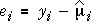
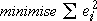

Model for numerical factors
The model without interaction that treats both factors as categorical is
yijk = µ + |
(explained by X) βi |
+ |
(explained by Z) γj |
+ |
(unexplained) εijk |
The simplest way to impose a smooth relationship between each numerical factor and the response is with a linear term. A linear model for both factors takes the form
yijk = µ + |
(explained by X) β xi |
+ |
(explained by Z) γ zi |
+ |
(unexplained) εijk |
This model corresponds to a plane in 3-dimensions.
Drilling thrust
A possible model for how drilling speed and feed rate affect drilling thrust is:
mean thrust = 86 + 6 × feed rate + 0.14 × drill speed
The diagram below represents this model as a plane.
Click anywhere between the feed and speed axes (in the yellow area of the diagram) to see how the plane translates any pair of values (feed, speed) into a predicted value of thrust, via the equation.
Least squares
The linear model above contains three unknown parameters that must be estimated. We again define residuals to be differences between the actual response values and the values predicted by the model:

The residuals are vertical distances between the model plane and the data points. The parameters are estimated to minimise the sum of squares of these residuals — the method of least squares.

Drilling thrust
The diagram below again shows the drilling thrust data. The model residuals are shown as red vertical lines from the data points to their fitted values.
Initially the model used only has a constant term for the mean. Since neither of the factors affect the response in this model, all fitted values are equal and their least squares estimate is the overall response mean.
Select Linear from the pop-up menu for Feed rate. This displays the least squares fit of a linear model containing a linear term for this variable (but no term for the Drill speed). The feed rate seems to have an important influence on the thrust.
Finally select Linear from the pop-up menu for Drill speed. This displays the least squares fit for the full linear model for the two controlled variables.
Adding Drill speed does not change the fitted plane much. Does this factor really affect thrust?
One numerical factor and one categorical factor
If one factor is categorical, we have less choice in the possible models — the categorical factor cannot be modelled with a linear term. For example, if X is numerical and Z is categorical, then a linear model has the form:
yijk = µ + |
(explained by X) β1 xi |
+ |
(explained by Z) γj |
+ |
(unexplained) εijk |